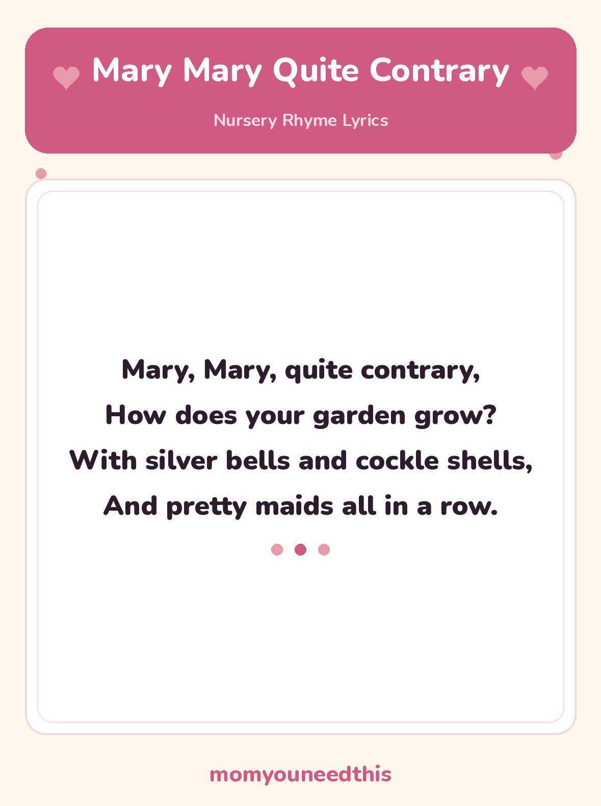

Mary Mary Quite Contrary The Garden Rhyme, With Lyrics and a Free Printable
Mary Mary Quite Contrary is a traditional nursery rhyme about a garden that grows silver bells, cockle shells and pretty maids all in a row. The full lyrics are below, with a free printable lyrics sheet to sing together and talk about gardens. No signup, just print.
Last updated: October 25, 2026
Quick Answer
Mary Mary Quite Contrary is a traditional nursery rhyme about a garden growing silver bells, cockle shells and pretty maids all in a row. The full lyrics are written out on this page, and the same words are on the free printable lyrics sheet, ready to print and sing together.
At a Glance
- Rhyme: Mary Mary Quite Contrary
- Type: Story rhyme
- Best for: Ages 2–6
- Printable: 1 lyrics sheet
- Tradition: In print since the 1740s
- Cost: Free — print at home
🎵 Mary Mary Quite Contrary Lyrics
The full traditional rhyme — a garden like no real garden, in one short verse.
Mary, Mary, quite contrary,
How does your garden grow?
With silver bells and cockle shells,
And pretty maids all in a row.

✂️ Download Your Free Mary Mary Quite Contrary Lyrics Sheet
The full Mary Mary Quite Contrary lyrics on one big, clear sheet — made for fridges and singing together.
⬇️ Download Free Lyrics Sheet 🖨️ Print🎁 Free printable for ages 2–6
🌸 About This Rhyme: Words From an Old Garden
Almost everything in Mary’s garden is a word worth stopping for. Silver bells and cockle shells sound like garden treasure — small, shiny, jingly things — and pretty maids all in a row paints a neat line of flowers standing to attention. Whether each item was once a real flower name, a shell, or a person in a row, nobody knows for sure — and that guessing is honestly part of the fun of the rhyme.
You will sometimes hear that the rhyme is secretly about a queen called Mary. Those stories are guesses only: people have suggested more than one queen over the years, and there is no solid evidence for any of them. The rhyme needs no hidden queen to work — it works perfectly as what it sings like, a small girl and her very unusual garden.
It is also a genuinely useful rhyme outdoors. Sing it in a real garden or park and ask what your child’s garden would grow — the answers (lollipops, dinosaurs, silver bells) are the rhyme still doing its job.
🖨️ How to Use This Rhyme
- Sing the question and answer. You ask “How does your garden grow?” and let your child sing the reply — the rhyme is built as a call and response.
- Mime the garden. Ring an imaginary bell, hold a shell to your ear, then stand up straight in a row for the pretty maids. Actions help toddlers hold the words.
- Print the lyrics sheet. One page with the full rhyme in big, clear type — good on a wall near the garden door or in a nature basket.
- Let them “read” it back. Point along each line as you sing, then swap roles. Following words in order, even before reading them, is real early literacy.
🎵 More Nursery Rhymes & Fun
🎵 Nursery Rhymes
The full hub of classic nursery rhymes — lyrics and a free printable sheet for every rhyme. Browse all nursery rhymes.
🎶 Little Miss Muffet
The classic spider rhyme, with curds and whey explained and a free printable lyrics sheet. Read Little Miss Muffet.
🎶 Georgie Porgie
Pudding and pie and a teasing boy who runs away — the classic playground rhyme, with lyrics and a printable. Read Georgie Porgie.
🎨 Free Coloring Pages
Hundreds of free coloring sheets to print for every age. See the coloring pages.
❓ Mary Mary Quite Contrary FAQ
What are the lyrics to Mary Mary Quite Contrary?
They are written out in full on this page above — “Mary, Mary, quite contrary, how does your garden grow…” The free printable lyrics sheet carries exactly the same words, so you can print it and sing along together.
What age is Mary Mary Quite Contrary for?
It suits toddlers and preschoolers, roughly ages 2 to 6. The question-and-answer shape makes it easy to join in early, and the strange garden words give older preschoolers plenty to ask about.
Can I print the lyrics sheet?
Yes — the lyrics sheet is free to print at home, with no signup. It is a single page carrying the full rhyme in big, clear type, made for fridges, nursery walls and singing together.
What are cockle shells?
Cockles are small shellfish with round, ribbed shells, and cockle shells are their empty shells. In this nursery rhyme they sit in a list of pretty garden things — silver bells, cockle shells and pretty maids all in a row. Whether each item is a flower, a shell or a person, nobody knows for sure.